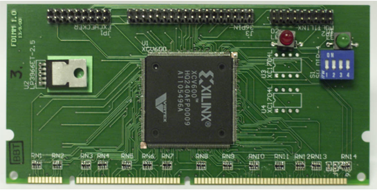

The Computer Engineering Lab focuses on how to use field programmable gate array, VLSI and parallel processor technologies to solve difficult computing problems. We develop novel architectures, applications and design techniques to solve problems in signal processing and machine learning.
In 2017, in collaboration with Xilinx Research Labs, our FINN paper was one of the first to demonstrate that binarized neural networks are an excellent match to FPGA architectures [3]. Implementations exploiting binary weights have led to the highest performance FPGA implementations of convolutional neural networks. We further improved the accuracy using Symmetric Quantization [1], reporting state of the art results. We have also developed a fully parallel implementation of ternary networks which achieved the highest reported performance on an FPGA for small convolutional neural networks [2] (Figure 1).
Julian Faraone et al. “SYQ: Learning Symmetric Quantization For Efficient Deep Neural Networks”. In: Proc. Computer Vision and Pattern Recognition (CVPR). Utah, US, June 2018. doi: 10.1109/CVPR.2018.00452. url: syq_cvpr18.pdf.
Stephen Tridgell et al. “Unrolling Ternary Neural Networks”. In: ACM Trans. Reconfigurable Technol. Syst. 12.4 (Oct. 2019), 22:1–22:23. issn: 1936-7406. doi: 10.1145/3359983. url: ternary_trets19.pdf.
Yaman Umuroglu et al. “FINN: A Framework for Fast, Scalable Binarized Neural Network Inference”. In: Proc. ACM/SIGDA International Symposium on Field-Programmable Gate Arrays (FPGA). Source code available from https://github.com/Xilinx/BNN-PYNQ. 2017, pp. 65–74. doi: 10.1145/3020078.3021744. url: bnn_fpga17.pdf.
We have also been exploring how FPGA architectures can be modified to better support the implementation of low-precision neural networks. In 2019, collaborating with Fudan University, we developed PIR-DSP, a digital signal processing (DSP) block compatible with the Xilinx DSP38E2 which supports 9, 4 and 2-bit multiply-accumulation (MAC) operations, offering a 6, 12, and 24× improvement in MACs per DSP respectively [1] (Figure 2). We also developed LUXOR, which are vendor-agnostic (LUXOR) and vendor-specific (LUXOR+) modifications to the Xilinx and Intel logic elements to allow the efficient implementation of compressor trees [2]. We demonstrate that LUXOR can deliver an average reduction of 13-19micro-benchmarks from a variety of domains. Binarized neural networks benefit the most with an average reduction of 37-47utilization, which is due to the highly-efficient mapping of the XnorPopcount operation on our proposed LUXOR+ logic cells.
SeyedRamin Rasoulinezhad et al. “PIR-DSP: An FPGA DSP block Architecture for Multi-Precision Deep Neural Networks”. In: Proc. IEEE Symposium on Field-Programmable Custom Computing Machines (FCCM). 2019, pp. 1–8. doi: 10.1109/FCCM.2019.00015. url: pirdsp_fccm19.pdf.
Seyedramin Rasoulinezhad et al. “LUXOR: An FPGA Logic Cell Architecture for Efficient Compressor Tree Implementations”. In: The 2020 ACM/SIGDA International Symposium on Field-Programmable Gate Arrays. FPGA ’20. Seaside, CA, USA: Association for Computing Machinery, 2020, pp. 161–171. isbn: 9781450370998. doi: 10.1145/3373087.3375303. url: luxor_fpga20.pdf.
We have developed a mixed-precision on-chip training implementation of the SWALP algorithm on the Xilinx Zynq platform [1]. Using predominantly 8-bit integer numbers, block floating-point quantisation and stochastic weight averaging techniques are applied during training to avoid any degradation in accuracy. By using floating-point for the small number of high-precision operations required, we achieve a 0.5% accuracy improvement for the MNIST and CIFAR10 benchmarks, with results within 0.1% of floating point.
Sean Fox et al. “Training Deep Neural Networks in Low-Precision with High Accuracy using FPGAs”. In: Proc. International Conference on Field Programmable Technology (FPT). Best Paper Award Candidate. 2019, pp. 1–9. doi: 10.1109/ICFPT47387.2019.00009. url: lptrain_fpt19.pdf.
We have developed a family of implementations of kernel methods which can perform simultaneous learning and prediction with different tradeoffs between capacity, performance, and area (Figure 3). Our microcoded kernel recursive least squares (KRLS) and kernel normalised least mean squares (KNLMS) implementations achieves an order of magnitude improvement in throughput over a microprocessor, and is programmable [3]. Our fully pipelined implementation of KNLMS achieves 161 GFLOPS, this being a 10x speedup over a desktop processor and a 2.66x speedup over a GPU [2]. We developed the braiding technique which overcomes dependencies by expressing the output as a combination of the earlier state and other examples in the pipeline. This was applied to the Naive Online regularised Risk Minimization Algorithm (NORMA), achieving a latency of less than 100 ns [4]. We also developed a delayed update scheme to achieve 250 Gop/s, a 1.8x improvement on the state of the art and 12x higher performance than the standard KNLMS algorithm [1] .
Nicholas J. Fraser and Philip H. W. Leong. “Kernel Normalised Least Mean Squares with Delayed Model Adaptation”. In: ACM Trans. Reconfigurable Technol. Syst. 13.2 (Feb. 2020). issn: 1936-7406. doi: 10.1145/3376924. url: dknlms_trets20.pdf.
Nicholas J. Fraser et al. “FPGA Implementations of Kernel Normalised Least Mean Squares Processors”. In: ACM Trans. Reconfigurable Technol. Syst. 10.4 (Dec. 2017), 26:1–26:20. issn: 1936-7406. doi: 10.1145/3106744. url: knlms_trets17.pdf.
Yeyong Pang et al. “A Microcoded Kernel Recursive Least Squares Processor Using FPGA Technology”. In: ACM Trans. Reconfigurable Technol. Syst. 10.1 (Sept. 2016), 5:1–5:22. issn: 1936-7406. doi: 10.1145/2950061. url: kproc_trets16.pdf.
Stephen Tridgell et al. “Braiding: a Scheme for Resolving Hazards in kernel adaptive filters”. In: Proc. International Conference on Field Programmable Technology (FPT). Queenstown, 2015, pp. 136–143. doi: 10.1109/FPT.2015.7393140. url: braiding_fpt15.pdf.
We developed analytical models that relate FPGA architectural parameters to the delay [2], logic size and depth [1] of an FPGA implementation. We also proposed hybrid FPGAs and a methodology to optimize coarse-grained floating point units (FPUs) which used common subgraph elimination to determine the best mix of blocks within an FPU [3].
Joydip Das et al. “An Analytical Model Relating FPGA Architecture to Logic Density and Depth”. In: IEEE Transactions on VLSI Systems 9.12 (2011), pp. 2229–2242. url: anyl_tvlsi11.pdf.
Eddie Hung et al. “A Detailed Delay Path Model for FPGAs”. In: Proc. International Conference on Field Programmable Technology (FPT). Sydney, 2009, pp. 96–103. url: delay_fpt09.pdf.
ChiWai Yu et al. “Optimizing Floating Point Units in Hybrid FPGAs”. In: IEEE Transactions on VLSI Systems 20 (7 2012), pp. 1295–1303. url: ofpu_tvlsi12.pdf.
FPGAs enable the integration of radio and machine learning on a single device, allowing latency to be minimised and making them an excellent platform for physical layer radio frequency (RF) applications. We have implemented a long short-term memory based spectral prediction system with 4.5 μS latency [1]. We have also developed a high performance automatic modulation classification (AMC) system using the Xilinx RFSoC platform [2], which utilises a fully parallel ternary neural network to achieve throughput of 488K classifications per second (Figure 4). More information is available at http://phwl.org/2020/rtamc/.
Siddhartha et al. “Long Short-term Memory for Radio Frequency Spectral Prediction and its Real-time FPGA Implementation”. In: Proc. MILCOM. Los Angeles, US, Oct. 2018, pp. 1–9. doi: 10.1109/MILCOM.2018.8599833. url: lstm_milcom18.pdf.
Stephen Tridgell et al. “Real-time Automatic Modulation Classification using RFSoC”. In: 2020 IEEE International Parallel and Distributed Processing Symposium Workshops, IPDPSW 2020, New Orleans, LA, USA, May 18-22, 2020. IEEE, 2020, pp. 82–89. doi: 10.1109 / IPDPSW50202.2020.00021. url: amc_raw20.pdf.
We proposed compact true and pseudo random number generators which can be efficiently implemented on FPGAs [2]. Seminal work on Gaussian number generators on FPGAs were also reviewed and state of the art implementations based on different techniques proposed [1].
David B. Thomas et al. “Gaussian random number generators”. In: ACM Computing Surveys 39.4 (2007), 11:1–11:38. url: grng_acmcs07.pdf.
K.H. Tsoi, K.H. Leung, and P.H.W. Leong. “Compact FPGA-based True and Pseudo Random Number Generators”. In: Proc. IEEE Symposium on Field-Programmable Custom Computing Machines (FCCM). California, 2003, pp. 51–61. url: tprng_fccm03.pdf.
We recognised that FPGA to processor transfers via the PCI-bus introduced substantial latency to many applications, and addressed it by proposing Pilchard, an FPGA card which plugged directly into a memory slot of a high-performance processor [2] (Figure 5). This was among 25 papers recognised in the FCCM20: Highlighting Significant Contributions from 20 Years of the International IEEE Symposium on Field-Programmable Custom Computing Machines (1993–2013)
We developed the highest performance structured ASIC with a 26/5x improvement in area/delay compared to an FPGA, which is customised using a minimum of 3 masks, i.e. two metals and one via [1] (Figure 6).

Man-Ho Ho et al. “Architecture and Design Flow for a Highly Efficient Structured ASIC”. In: IEEE Transactions on VLSI Systems 21.3 (2013), pp. 424–433. url: sasic_tvlsi12.pdf.
P.H.W. Leong et al. “Pilchard - A Reconfigurable Computing Platform with Memory Slot Interface”. In: Proc. IEEE Symposium on Field-Programmable Custom Computing Machines (FCCM). Selected as one of the 25 most significant papers from the first 20 years of FCCM. California, 2001, pp. 170–179. url: pilchard_fccm01.pdf.
We were the first to demonstrate acceleration of Monte Carlo (MC) techniques for the pricing of complex derivatives using FPGAs [1]. Our pipelined MC core implemented the Brace, Gatarek and Musiela (BGM) interest rate model and was 25 times faster than a software implementation on a desktop processor.
G. L. Zhang et al. “Reconfigurable Acceleration for Monte Carlo based Financial Simulation”. In: Proc. International Conference on Field Programmable Technology (FPT). Singapore, 2005, pp. 215–222. url: bgm_fpt05.pdf.
We reported the most efficient FPGA implementations of an elliptic curve processor [1], the IDEA algorithm [LCTL:00], Montgomery multiplication [2] and RC4 [3]. We also novel techniques to implement physically uncloneable functions (PUFs) [4].
P.H.W. Leong and K.H. Leung. “A Microcoded Elliptic Curve Processor using FPGA Technology”. In: IEEE Transactions on VLSI Systems 10.5 (2002), pp. 550–559. url: ecc_tvlsi02.pdf.
K.H. Tsoi, O.Y.H. Cheung, and P.H.W. Leong. “A Variable-Radix Systolic Montgomery Multiplier”. In: Proc. IEEE Symposium on Field-Programmable Custom Computing Machines (FCCM). California, 2002. url: mm_fccm02.pdf.
K.H. Tsoi, K.H. Lee, and P.H.W. Leong. “A Massively Parallel RC4 Key Search Engine”. In: Proc. IEEE Symposium on Field-Programmable Custom Computing Machines (FCCM). California, 2002, pp. 13–21. url: rc4_fccm02.pdf.
Haile Yu, Philip H.W. Leong, and Qiang Xu. “An FPGA Chip Identification Generator Using Configurable Ring Oscillator”. In: IEEE Transactions on VLSI Systems 20.11 (2012), pp. 2198–2207. url: id_tvlsi12.pdf.
We demonstrated the multiplexing of photons from four temporal modes solely using fiber-integrated optics and off-the-shelf FPGAs, achieving a 100% enhancement to the single photon output probability without introducing additional multi-photon noise [1] (Figure 7). Time-bin entangled photons allow robust entanglement distribution over quantum networks. We also demonstrated time-bin entangled photon generation, noise suppression, wavelength division, and entanglement analysis on a single photonic chip utilizing low-loss double-stripe silicon nitride waveguide structures [2].
C. Xiong et al. “Active temporal multiplexing of indistinguishable heralded single photons”. In: Nature Communications 7.10853 (2016). doi: 10.1038/ncomms10853. url: atm_ncomms16.pdf.
Xiang Zhang et al. “Integrated silicon nitride time-bin entanglement circuits”. In: Opt. Lett. 43.15 (Aug. 2018), pp. 3469–3472. doi: 10.1364/OL.43.003469. url: http://ol.osa.org/abstract.cfm?URI=ol-43-15-3469.
We showed that the morphology of intracardiac electrocardiogram signals can be used to improve classification accuracy in implantable cardiac defibrillators (ICD) [2], and that it could be implemented in low-power analogue VLSI [4, 1]. This led to a patent [3] that has been cited by all of the major ICD manufacturers such as Medtronic, Cardiac Pacemakers and Siemens, St. Jude Medical, and Pacesetter, and is being used in their commercial devices.
P. H. W. Leong and M.A. Jabri. “A Low Power VLSI Arrhythmia Classifier”. In: IEEE Transactions on Neural Networks 6.6 (Nov. 1995), pp. 1435–1445. url: matic_tnn95.pdf.
P.H.W. Leong and M. Jabri. “MATIC - an intracardiac tachycardia classification system”. In: Pacing and Clinical Electrophysiology (PACE) 15 (Sept. 1992), pp. 1317–1331.
P.H.W. Leong and M.A. Jabri. A method and system for automatically classifying intracardiac electrograms. US Patent 5,280,792. University of Sydney. Jan. 1994.
Philip Leong. “Arrhythmia classification using low power VLSI”. PhD thesis. University of Sydney, 1992. url: phdthesis.pdf.
We have developed feature selection techniques for time series problems, and applied them to a number of different applications including respiratory artefact removal [2, 1]. A parameterised generator is used to produce a large set of candidate features, and a number of complementary metrics used to select a subset. This technique was found to produce significantly improved results in the abovementioned application domains.
Thuy T. Pham et al. “Automated Quality Control of Forced Oscillation Measurements: Respiratory Artifact Detection with Advanced Feature Extraction”. In: Journal of Applied Physiology 123 (4 May 2017), jap.00726.2016. doi: 10.1152/japplphysiol.00726.2016. url: fot_jappl17.pdf.
Thuy T. Pham et al. “Respiratory Artefact Removal in Forced Oscillation Measurements: A Machine Learning Approach”. In: IEEE Transactions on Biomedical Engineering 64.8 (Aug. 2017), pp. 1679–1687. issn: 0018-9294. doi: 10.1109/TBME.2016.2554599. url: fot_tbme16.pdf.